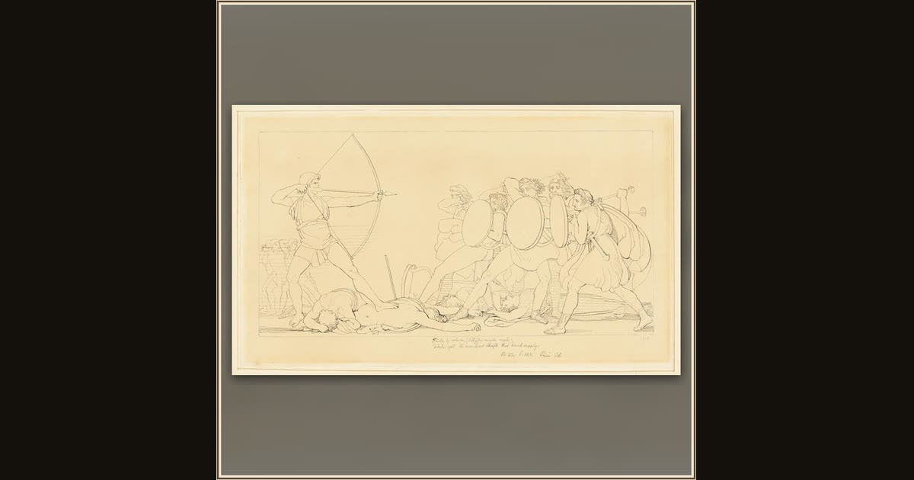

Ulysses Killing the Suitors
John Flaxman, II, English, 1755-1826 · n.d. · The Art Institute of Chicago · Chicago, USA
Bow in hand at last, Odysseus turns on the suitors who feasted in his hall and courted his faithful wife. Explore its place in Book XXII of the Odyssey.